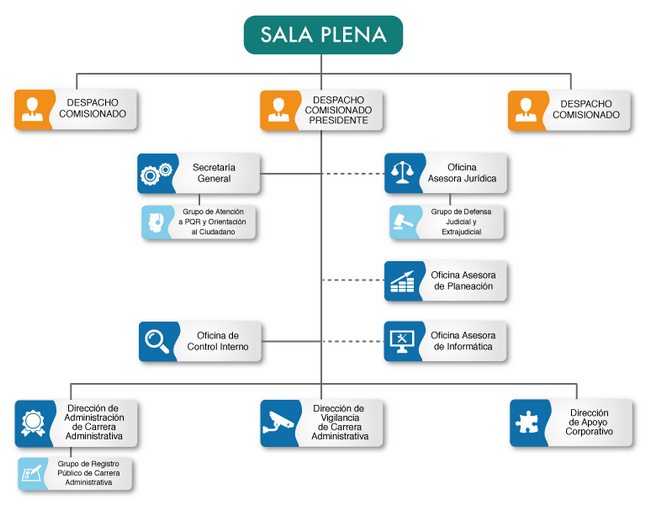

Organización
Cuenta con una organización lineo-funcional con sus diferentes despachos, oficinas y secretarías, aquí abajo podemos ver como está organizada.

CNSC | Estructura organizacional
Convocatorias
Dentro del CNSC Existen convocatorias para las personas que quieran hacer parte de esta comisión.Existen unas etapas para el concurso
- Registro en SIMO
- Divulgación de la convocatoria
- Inscripciones
- Verificación de requisitos mínimos
- Aplicación de pruebas
- Lista de elegibles
- Periodo de prueba
Guía para las convocatorias de la CNSC
Ofertas de la CNSC para Ingenieros de Sistemas
- Profesional de seguridad o defensa
- Tecnico De Servicios, De Inteligencia O De Policia Judicial O Tecnico Para Apoyo De Seguridad Y Defensa
- Tecnico De Servicios, De Inteligencia O De Policia Judicial O Tecnico Para Apoyo De Seguridad Y Defensa
- Tecnico De Servicios, De Inteligencia O De Policia Judicial O Tecnico Para Apoyo De Seguridad Y Defensa
- Más ofertas laborales aquí